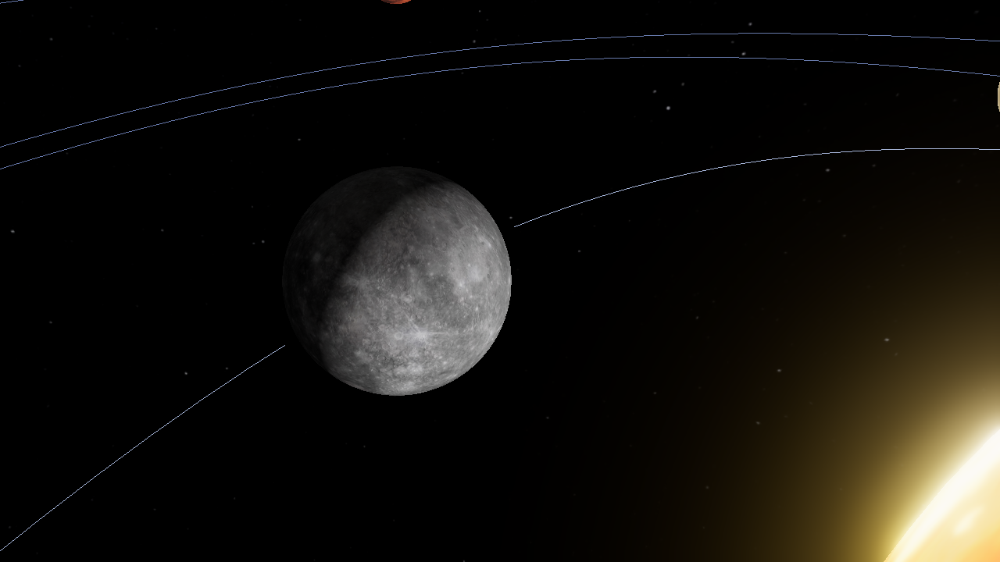

Merkury
Orbitka
Skala uproszczona
Merkury
planeta
skalista
Średnica0,38 × Ziemia
Ziemia
Merkury
Ziemia jest ok. 2,6 raza szersza od Merkurego.
Merkury ok. 4 900 km · Ziemia ok. 12 700 km
- Rok trwa88 dni ziemskich
- Obrót wokół osi58,6 doby ziemskiej
CiekawostkaMerkury to najmniejsza planeta Układu Słonecznego.
Treść przykładowa · teksty w M4 (Treści)
20 listopada 20261 dzień/s
1 dzień10 dni1 mies.1 rok